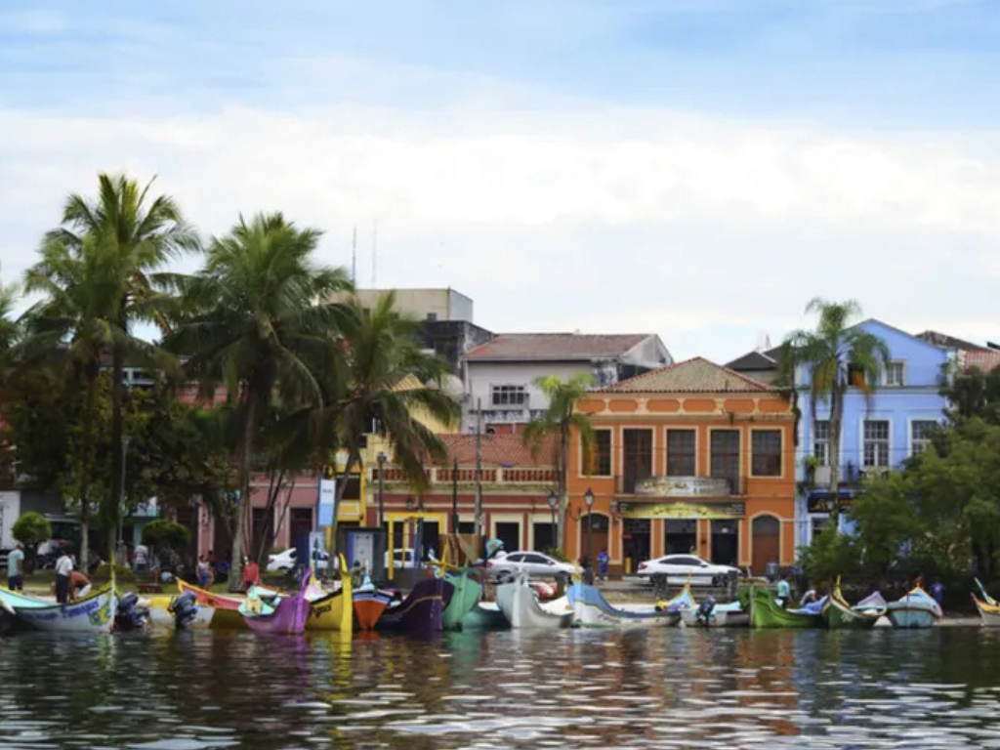

O estado do Pará é um dos mais importantes da Região Norte do Brasil, conhecido por sua enorme riqueza natural, cultural e econômica. Com grande parte de seu território coberto pela Floresta Amazônica, o Pará possui rios extensos, biodiversidade abundante e cidades marcadas por fortes tradições amazônicas. Sua capital, Belém, é famosa pelo Mercado Ver-o-Peso, pela culinária típica à base de peixes e frutas regionais, e pela realização do Círio de Nazaré, uma das maiores manifestações religiosas do país. O estado também se destaca pela mineração, pelo extrativismo e pela influência das culturas indígena, africana e portuguesa, que formam uma identidade cultural rica e única.
